My passions are science, software, and the visual media.
I have been an experimental scientist, using lasers
to study atoms, molecules, and cells.
I have been a software engineer building tools for teaching
math, science, and languages to students old and young.
I have been a film school student, shooting, editing, and
crewing short film shoots.
I want to build solutions that make peoples' lives easier,
more efficient, and more fun.
I want to write software that's so interactive and intuitive
that you can use it almost with a sense of touch.
I want to create visual media that entertains and informs,
making complex concepts accessible without dumbing them down.
Software
LaserCanvas
Interactive modeling of laser resonators, aimed at researchers
and students.
The original project was written in Win32 C++.
A new version was written in vanilla JavaScript. The source code
is on GitHub.
See it in action: LaserCanvas
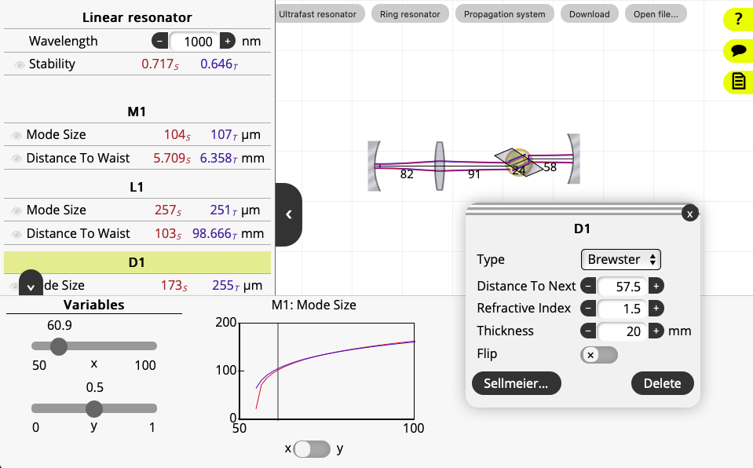
Advanced features in LaserCanvas Web, including equations, variables,
and property graphs.
e-Learning
My professional software development career has allowed me to dedicate
almost ten years to building e-learning systems. The products aimed to
provide engaging and effective content to learners, intuitive
authoring platforms to content creators, and insightful reporting to
educators.
Teaching tools
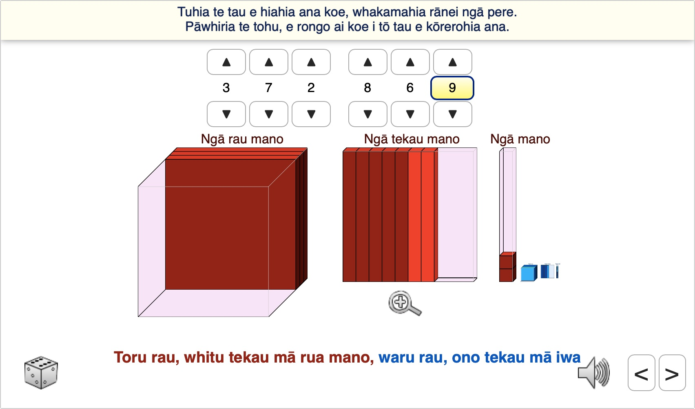
Tool for teaching numbers and place value, here localized to
te Reo Maori language. The tool was initially written in Flash / Actionscript
and subsequently rewritten in JavaScript.
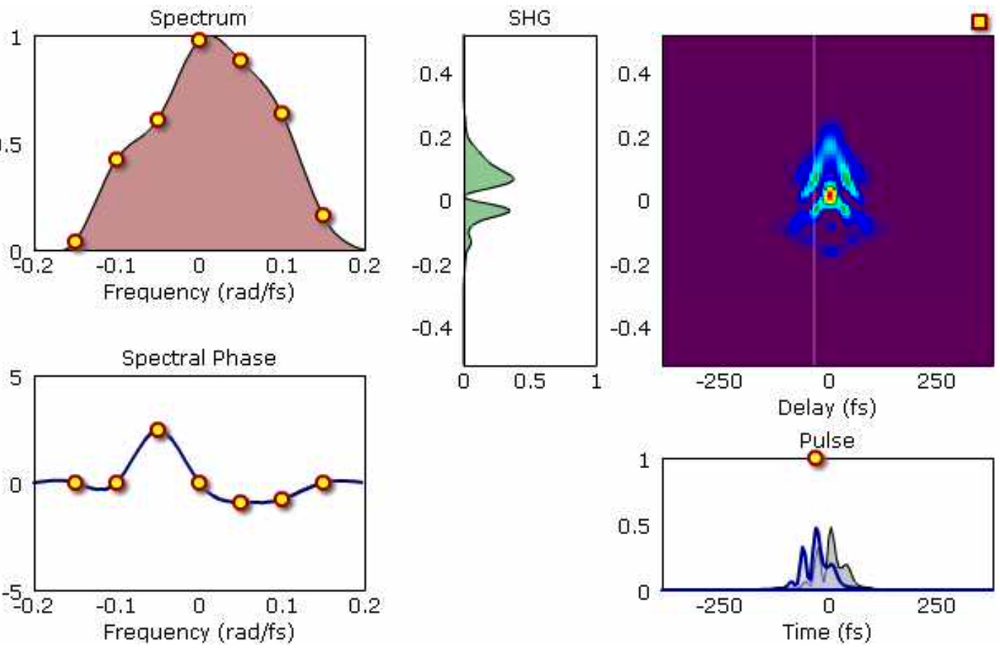
Flash / Actionscript simulator of the
frequency-resolved optical gating
technique to measure laser pulses. The yellow circles represent
handles that can be dragged to control the simulation parameters.
x equals minus b plus or minus the square root of,
b squared minus 4 ay c,
divided by 2 ay
This LaTeX-to-text processor parses an equation and outputs
text that is passed to a text-to-speech converter. Despite some
possible ambiguities, I chose to prefer a "natural" reading style,
rather than the explicit reading of parentheses and groups that other
equation readers employ.
Lab software
Lab software written in Win32 C++ to communicate with spectrometers,
stepper motors, and data acquisition boards. These were used
to measure experimental data. Data processing and visualization
included on-screen draggable controls to adjust processing
parameters in real time.
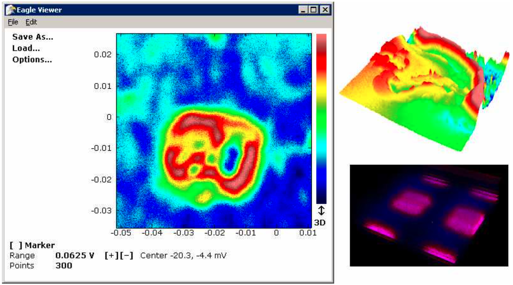
Data acquisition software, here used to measure optical
signals scanned over a 2d plane. The parameters can be adjusted
handles by manipulating control handles in real time.
Multiple scans can be combined to form 3D images.
And here is a little game I put
together with our kids, based on her favorite toy horse, Lily.
Illustrations
3D POV-Ray / Blender
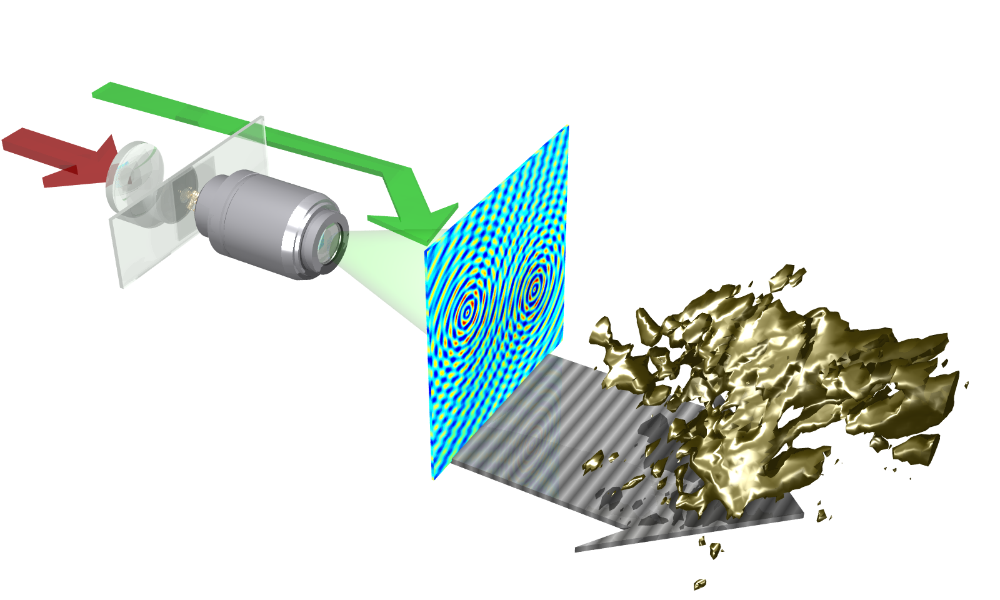
Holographic microscopy and object reconstruction. The 3d shape is
a reconstruction of experimentally measured data.
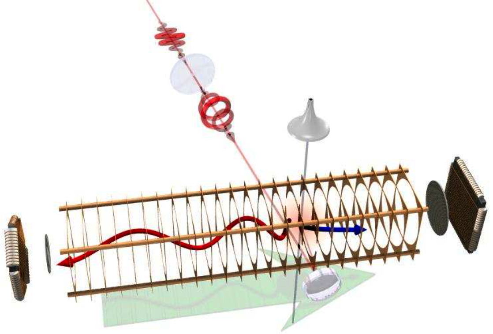
Electron and ion imaging of single atom photoionization.
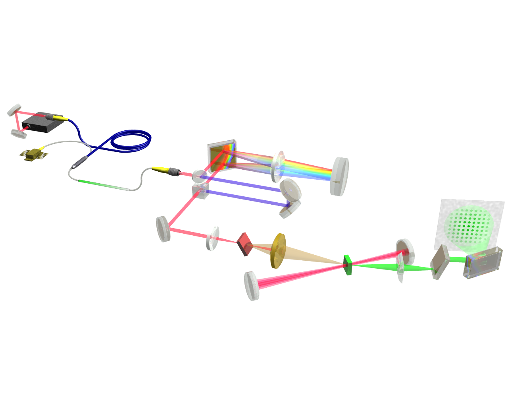
Experimental setup of difference frequency generation.
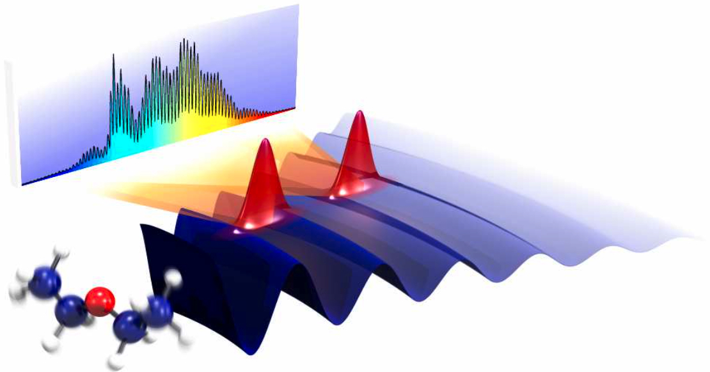
Synthetic aperture experiment to measure vibrational motion.
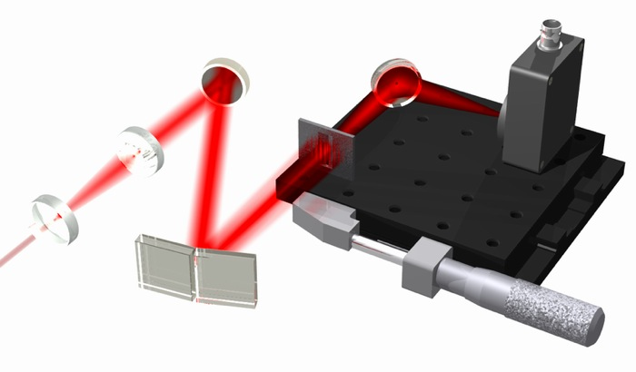
Experimental setup of cross beam spectrometer.
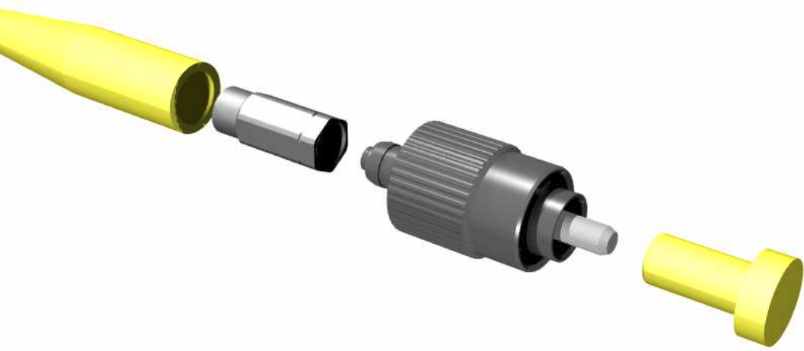
Exploded assembly view of optical fiber end cap.
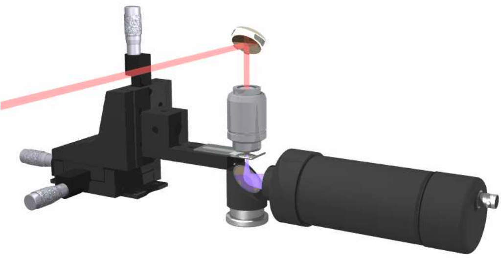
Third-harmonic generation microscopy with photomultiplier detector.
3D OpenGL
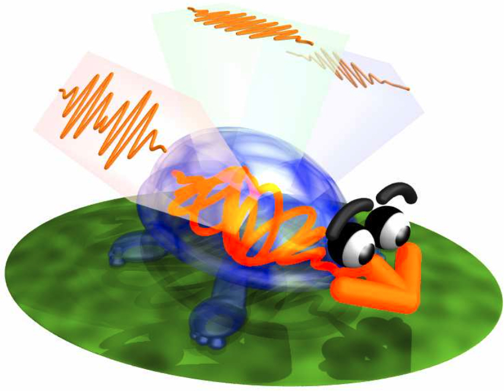
Visual representation of electric field projections.
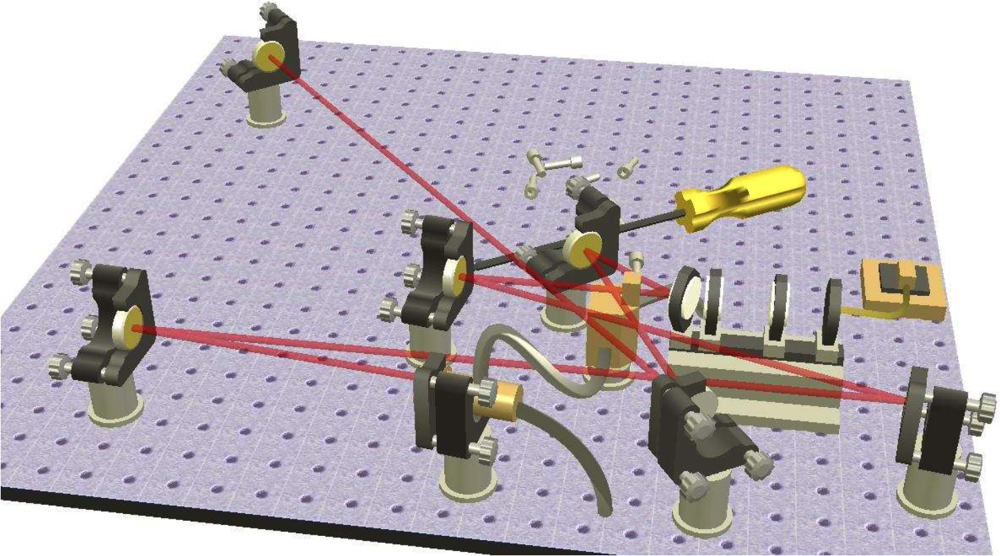
Tabletop laser assembly.
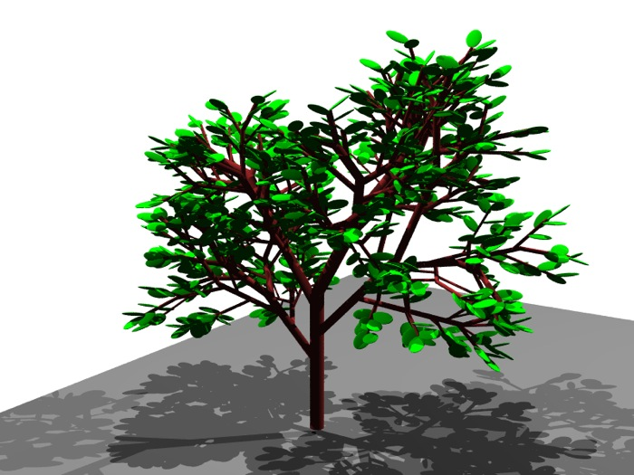
3D fractal tree generation.
Line art
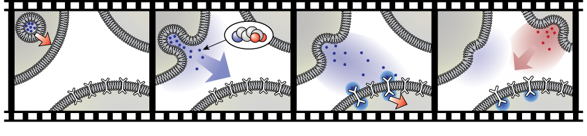
Signaling molecules exchanged between cells.
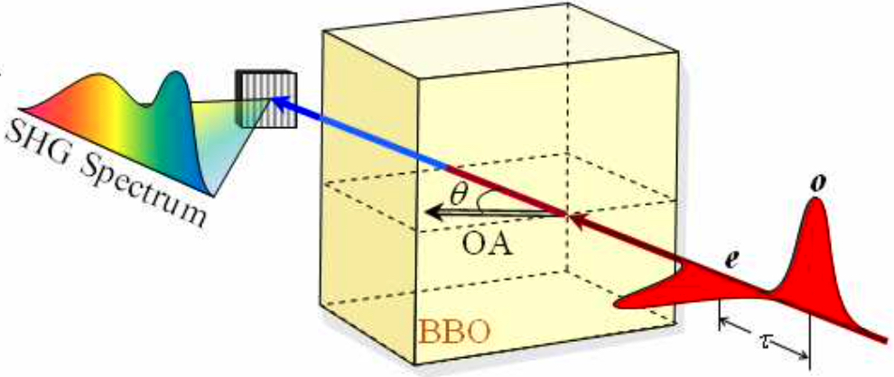
Second-hardmonic generation and interference in birefringent crystal.
Light pulse electric field projections.
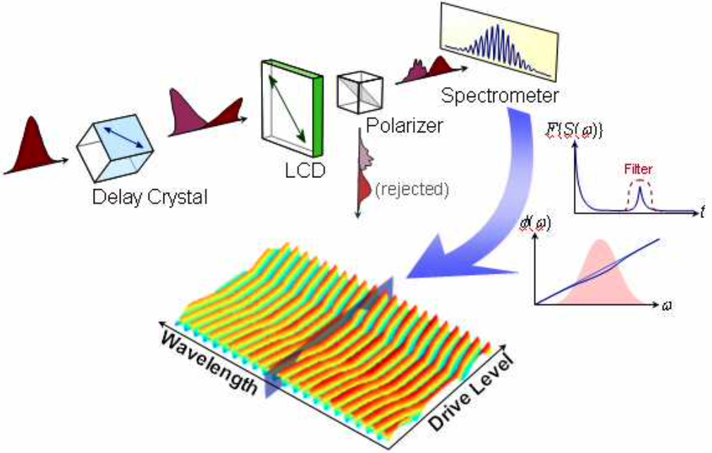
Measurement of phase response of liquid crystal using interference.
Animations
Animation showing the recording of three dimensional structures using
second harmonic generation microscopy. The object can subsequently be
reconstructed from the recorded interference fringes.
Rendered in Blender.
Animation showing ion and electron spectroscopy of
single atom photoionization (COLTRIMS). The momentum of
each fragment is recorded via time-of-flight measurements,
which allows the ionization event to be reconstructed.
Rendered using POV-Ray (a long time ago).
Animation illustrating three chromosomes
in a cell undergoing mitosis.
Rendered in Blender.
DNA strand and the start of its assembly into chromosomes.
The animation is not intended to be scientifically accurate,
solely to indicate the vast quantity of individual elements
that make up DNA.
Illustration of neurons exchanging information. Rendered in Blender.
Rendering of nucleosome and DNA strand.
The structural data was taken from the,
Protein Data Bank.
This was a project to build a custom protein viewer at a time when
the availability of such viewers was more limited.
Rendered using C++ and OpenGL.
Whimsical instrument playing The Flight of the Bumblebee.
The clip was created programmatically by defining the
trajectory of a single note, and animating the complete set
using a MIDI file.